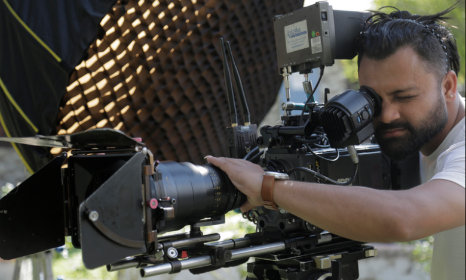

Sudip Kunwar; The Most Versatile Chief Assistant Director of Nepali Cinema Industry
2022.07.17
Sudip Kunwar is indeed an accomplished and highly regarded figure in the Nepali cinema industry. Born on October 19, 1989, in Palpa, Nepal, From his parents Junga Bahadur Kunwar and Shanta Kunwar. He has had a prolific career as a Chief Assistant Director. His dedication to storytelling and filmmaking is evident through his extensive portfolio of work, which includes popular Nepali movies such as the “Nai Na Bhannu la” series, “Chhakka Panja” series, “Gurkha paltan“, “Hello Jindagi“, “Pardeshi“, “Highway“, “Lakka Jawan“, “Shree“, “Kina Lagchha Maya“, “Hajar Juni Samma“, “Dhuwa Yo Nasha,” “Feri Feri,” and many more.
What stands out about Sudip Kunwar is his commitment to the industry from a young age, as he began his movie career at just 19 years old. This early start allowed him to accumulate a vast amount of experience and expertise in the field. His loyalty, hard work, and professionalism have made him an indispensable part of numerous successful film projects.
Currently, Happily married with beautiful wife Shova Kunwar. Sudip lives in capital city of Kathmandu, Nepal. Having worked on over 54 Nepali feature films, Sudip Kunwar’s contribution to the Nepali cinema industry cannot be overstated. He has not only established himself as a trusted and skilled Chief Assistant Director but has also earned a reputation as a reliable team player. His passion for film making and dedication to his craft continue to drive his successful career in the industry. Sudip Kunwar‘s achievements and contributions have cemented his status as a respected and influential figure in Nepali cinema.
Award
It’s impressive to hear that Sudip Kunwar is not only a highly skilled Chief Assistant Director in the Nepali cinema industry but also a versatile talent with achievements in music and short films.
Winning national awards for his work as a Chief Assistant Director highlights his exceptional contributions to the film industry. This recognition underscores his talent and dedication to producing outstanding movies.
Additionally, his involvement in singing popular Nepali songs and creating over two dozens of music videos demonstrates his versatility as an artist. Music videos are a significant part of the entertainment industry, and Sudip’s contributions in this area showcase his creativity and ability to tell stories through music and visuals.
Furthermore, his work in over half a dozen short movies is another testament to his diverse skills and interests within the world of film making. Short films are a unique medium for storytelling, often allowing for innovative and concise narratives.
Sudip Kunwar’s ability to excel in multiple aspects of the entertainment industry, from film making to music, highlights his creativity and dedication to the arts, making him a prominent and respected figure in Nepali entertainment.
We met him in the dubbing studio while he was working on a movie project ”PARADESHI 2” which is releasing on Oct 13 , 2023 all over Nepal and aboard, Here is our short conversation with Mr. Sudip kunwar:-
MS : How’s Going Mr. Busy busy Chief assistant
Director ?
Sudip Kunwar : Working , working.. just working he replied with smile
MS : You are known as a very hard working, loyal and
honest chief assistant director. How You feel to
hear that ?
Sudip Kunwar : I feel very proud of myself. hard
working, loyalty and honesty; those are our identity, it’s in my blood. it is the tradition of my family, we are hard working and loyal people. all we know is, fulfill our duty and responsibilities with all our heart, My parents taught me this, he smiled again as usual.
MS : What’s next ?
Sudip Kunwar : “Movies and movies, there is nothing more or less in my mind except movie. currently, We working with veteran Writer / Director Everest Surya Bohara, at the moment, we are in pre-production phase. we will be shooting this movie in UK; of course; this is going to be our second movie in London, UK. I am very excited about this project.
MS: Well keep rocking.. keep running.. we wish you
all the best.
Sudip Kunwar : ‘Thank you so much for your kind words, I truly appreciated.’ he smiled and continued working. We left with smile.
https://koshedhungaonline.com/magazine/magazine-magazine/29481/